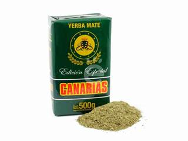
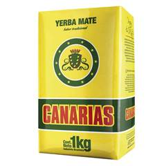
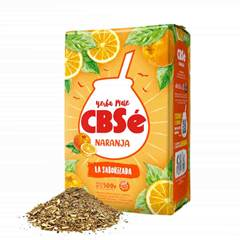
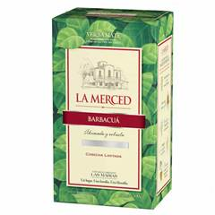
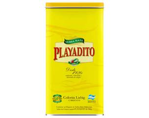
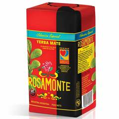
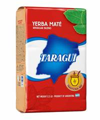

Welcome to the Yerba Mate Matcher
Find out more about different brands and flavors of yerba mate to find the right one for you! Our rating system takes into consideration price, bitterness, grind, country of origin, and includes a short description of each mate.

Barão de Cotegipe
Price: $$$
Bitterness: 4/5
Grind: very fine
Country of Origin: Brazil
Description: A very fine ground yerba vacuum-sealed to preserve a fresh, green taste. The perfect mix between bitter and smooth.

Canarias Edición Especial
Price: $$$$
Bitterness: 4/5
Country of Origin: Uruguay
Description: A premium version of Canarias with a smoother and more balanced flavor profile. Still strong and creamy, but slightly less bitter, making it easier to drink for long sessions.

Canarias
Price: $$$$
Bitterness: 5/5
Grind: very fine
Country of Origin: Uruguay
Description: A strong, full-bodied yerba with an extremely fine grind and almost no stems. Known for its intense bitterness and long-lasting flavor, it’s a favorite among experienced mate drinkers.

CBSe Naranja
Price: $$
Bitterness: 2/5
Grind: medium with stems
Country of Origin: Argentina
Description: A flavored yerba infused with natural orange notes. Light, refreshing, and slightly sweet, it’s a good choice for beginners or for those who prefer a softer mate.

La Merced Barbacuá
Price: $$$$
Bitterness: 4/5
Grind: medium with stems
Country of Origin: Argentina
Description: A traditional barbacuá-style yerba dried slowly over wood smoke. It has a deep, smoky aroma and a rich, complex flavor that feels rustic and authentic.

Playadito
Price: $$
Bitterness: 2/5
Grind: medium with stems
Country of Origin: Argentina
Description: A smooth and mellow yerba with mild bitterness and a slightly sweet finish. Very easy to drink, making it a popular choice for beginners or all-day mate sessions.

Rosamonte
Price: $$$
Bitterness: 5/5
Grind: medium with stems
Country of Origin: Argentina
Description: A bold and robust yerba with a strong bitterness and long-lasting flavor. Rosamonte is known for its powerful kick and consistent strength throughout many pours.

Taragüi
Price: $$
Bitterness: 3/5
Grind: medium with stems
Country of Origin: Argentina
Description: A classic everyday yerba with a balanced flavor and moderate bitterness. Reliable, approachable, and widely available, it’s one of the most recognizable Argentine brands.